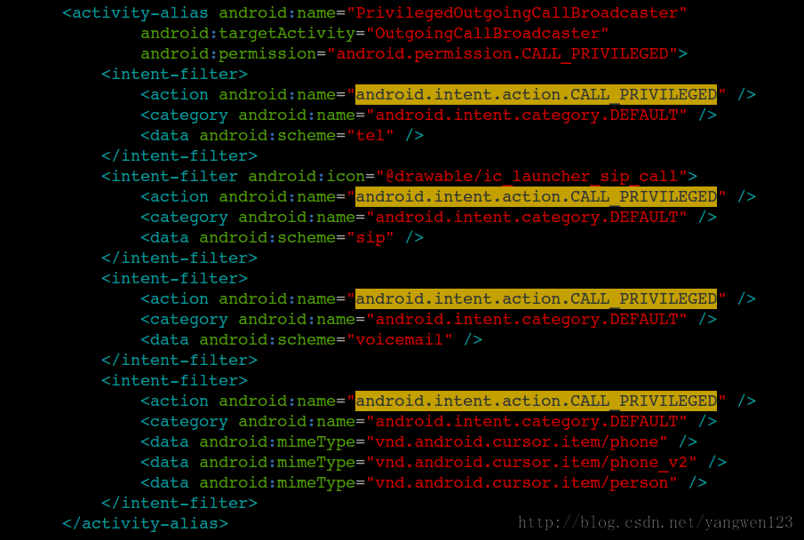

目录视图
目录视图 摘要视图
摘要视图 订阅
订阅前面分析了电话拨号界面及电话呼叫界面，由于Android的电话Phone设计的很复杂，因此先从UI层入手分析。想要了解Android的电话拨号UI，请查看Android电话拨号UI分析，电话拨号UI在Contacts包中。想要了解Android电话呼叫UI，请查看Android电话Phone UI分析，该UI在Phone包中，了解完电话想要UI后，还必须首先了解Android的Phone设计框架，Android电话Phone设计框架介绍介绍了Phone的框架设计及Phone进程的启动，本文以源码的形式介绍Android的电话拨打流程。点击Launcher上的拨号图标，首先进入电话拨号界面，前面已经分析了，该UI在Contacts包中，启动显示的是DialtactsActivity，关于DialtactsActivity的布局解析、UI布局在Android电话拨号UI分析中有详细的分析，这里不在重复介绍。我们从点击拨号按钮开始分析电话的拨号流程：
DialpadFragment.java
- public View onCreateView(LayoutInflater inflater, ViewGroup container, Bundle savedState) {
- ...
- // Check whether we should show the onscreen "Dial" button.
- mDialButton = mAdditionalButtonsRow.findViewById(R.id.dialButton);
- if (r.getBoolean(R.bool.config_show_onscreen_dial_button)) {
- mDialButton.setOnClickListener(this);
- } else {
- mDialButton.setVisibility(View.GONE); // It's VISIBLE by default
- mDialButton = null;
- }
- ...
拨号按钮的单击事件响应：
- public void onClick(View view) {
- switch (view.getId()) {
- case R.id.dialButton: {
- mHaptic.vibrate();
- dialButtonPressed();
- return;
- }
- ...
- }
- }
调用dialButtonPressed()函数发起电话呼叫
- public void dialButtonPressed() {
- if(mDigits == null){
- Log.e(TAG,"dialButtonPressed,mDigits == null");
- return;
- }
- //未输入号码处理
- if (isDigitsEmpty()) {
- handleDialButtonClickWithEmptyDigits();
- } else {
- final String number = mDigits.getText().toString();
- // "persist.radio.otaspdial" is a temporary hack needed for one carrier's automated
- // test equipment.
- if (number != null&& !TextUtils.isEmpty(mProhibitedPhoneNumberRegexp)
- && number.matches(mProhibitedPhoneNumberRegexp)
- && (SystemProperties.getInt("persist.radio.otaspdial", 0) != 1)) {
- Log.i(TAG, "The phone number is prohibited explicitly by a rule.");
- if (getActivity() != null) {
- DialogFragment dialogFragment = ErrorDialogFragment.newInstance(
- R.string.dialog_phone_call_prohibited_title);
- dialogFragment.show(getFragmentManager(), "phone_prohibited_dialog");
- }
- //号码输入不正确.
- mDigits.getText().clear();
- } else if(number != null && (number.startsWith(",") || number.startsWith(";"))){
- mDigits.getText().clear();
- if (getActivity() != null) {
- Toast.makeText(getActivity(), getText(R.string.invalid_number),
- Toast.LENGTH_SHORT).show();
- }
- } else {
- //启动电话呼叫界面
- final Intent intent = ContactsUtils.getCallIntent(number,(getActivity() instanceof DialtactsActivity ?
- ((DialtactsActivity)getActivity()).getCallOrigin() : null));
- startActivity(intent);
- mClearDigitsOnStop = true;
- mDigits.getText().clear();
- if(mFlagIntentNumber){
- getActivity().finish();
- }
- }
- }
- }
函数首先对输入的号码进行检查，如果没有输入号码，直接按下拨号按钮，则调用handleDialButtonClickWithEmptyDigits函数来处理
- private void handleDialButtonClickWithEmptyDigits() {
- if (phoneIsCdma() && phoneIsOffhook()) {
- // This is really CDMA specific. On GSM is it possible
- // to be off hook and wanted to add a 3rd party using
- // the redial feature.
- startActivity(newFlashIntent());
- } else {
- if (mDigits != null && !TextUtils.isEmpty(mLastNumberDialed)) {
- // Recall the last number dialed.
- mDigits.setText(mLastNumberDialed);
- // ...and move the cursor to the end of the digits string,
- // so you'll be able to delete digits using the Delete
- // button (just as if you had typed the number manually.)
- //
- // Note we use mDigits.getText().length() here, not
- // mLastNumberDialed.length(), since the EditText widget now
- // contains a *formatted* version of mLastNumberDialed (due to
- // mTextWatcher) and its length may have changed.
- mDigits.setSelection(mDigits.getText().length());
- } else {
- // There's no "last number dialed" or the
- // background query is still running. There's
- // nothing useful for the Dial button to do in
- // this case. Note: with a soft dial button, this
- // can never happens since the dial button is
- // disabled under these conditons.
- playTone(ToneGenerator.TONE_PROP_NACK);
- }
- }
- }
如果号码输入正确合法，则使用ContactsUtils工具类来创建一个Intent。
DialtactsActivity.java
- public String getCallOrigin() {
- return !isDialIntent(getIntent()) ? CALL_ORIGIN_DIALTACTS : null;
- }
- /** Returns true if the given intent contains a phone number to populate the dialer with */
- private boolean isDialIntent(Intent intent) {
- final String action = intent.getAction();
- if (Intent.ACTION_DIAL.equals(action) || ACTION_TOUCH_DIALER.equals(action)) {
- return true;
- }
- if (Intent.ACTION_VIEW.equals(action)) {
- final Uri data = intent.getData();
- if (data != null && Constants.SCHEME_TEL.equals(data.getScheme())) {
- return true;
- }
- }
- return false;
- }
从Launcher点击拨号图标进入的，因此isDialIntent返回true，getCallOrigin返回null
ContactsUtils.java
- public static Intent getCallIntent(String number, String callOrigin) {
- return getCallIntent(getCallUri(number), callOrigin);
- }
- public static Intent getCallIntent(Uri uri, String callOrigin) {
- final Intent intent = new Intent(Intent.ACTION_CALL_PRIVILEGED, uri);
- intent.setFlags(Intent.FLAG_ACTIVITY_NEW_TASK);
- if (callOrigin != null) {
- intent.putExtra(DialtactsActivity.EXTRA_CALL_ORIGIN, callOrigin);
- }
- return intent;
- }
action为Intent.ACTION_CALL_PRIVILEGED，因此使用隐式启动OutgoingCallBroadcaster

因此Phone进程中的OutgoingCallBroadcaster将被启动。google对电话拨号步骤有详细的说明：
/*
* Here's the most typical outgoing call sequence:
*
* (1) OutgoingCallBroadcaster receives a CALL intent and sends the
* NEW_OUTGOING_CALL broadcast
*
* (2) The broadcast finally reaches OutgoingCallReceiver, which stashes
* away a copy of the original CALL intent and launches
* SipCallOptionHandler
*
* (3) SipCallOptionHandler decides whether this is a PSTN or SIP call (and
* in some cases brings up a dialog to let the user choose), and
* ultimately calls CallController.placeCall() (from the
* setResultAndFinish() method) with the stashed-away intent from step
* (2) as the "intent" parameter.
*
* (4) Here in CallController.placeCall() we read the phone number or SIP
* address out of the intent and actually initiate the call, and
* simultaneously launch the InCallScreen to display the in-call UI.
*
* (5) We handle various errors by directing the InCallScreen to
* display error messages or dialogs (via the InCallUiState
* "pending call status code" flag), and in some cases we also
* sometimes continue working in the background to resolve the
* problem (like in the case of an emergency call while in
* airplane mode). Any time that some onscreen indication to the
* user needs to change, we update the "status dialog" info in
* the inCallUiState and (re)launch the InCallScreen to make sure
* it's visible.
*/

如OutgoingCallBroadcaster接收 CALL 和CALL_PRIVILEGED 两种Intents，然后广播出ACTION_NEW_OUTGOING_CALL intent，让别的应用程序有机会去监视这些intent，最后这些呼叫intent又被自己收到转换，启动InCallScreen.
src\com\android\phone\OutgoingCallBroadcaster.java
- protected void onCreate(Bundle icicle) {
- super.onCreate(icicle);
- setContentView(R.layout.outgoing_call_broadcaster);
- mWaitingSpinner = (ProgressBar) findViewById(R.id.spinner);
- Intent intent = getIntent();
- if (DBG) {
- final Configuration configuration = getResources().getConfiguration();
- Log.v(TAG, "onCreate: this = " + this + ", icicle = " + icicle);
- Log.v(TAG, " - getIntent() = " + intent);
- Log.v(TAG, " - configuration = " + configuration);
- }
- if (icicle != null) {
- //icicle不为空，表示重新初始化先前关闭的OutgoingCallBroadcaster，
- // In practice this happens very rarely (because the lifetime
- // of this activity is so short!), but it *can* happen if the
- // framework detects a configuration change at exactly the
- // right moment;
- // In this case, do nothing. Our onCreate() method has already
- // run once (with icicle==null the first time), which means
- // that the NEW_OUTGOING_CALL broadcast for this new call has
- // already been sent.
- Log.i(TAG, "onCreate: non-null icicle! "
- + "Bailing out, not sending NEW_OUTGOING_CALL broadcast...");
- return;
- }
- //处理得到的intent
- processIntent(intent);
- if (DBG) Log.v(TAG, "At the end of onCreate(). isFinishing(): " + isFinishing());
- }
函数直接调用processIntent函数处理前面发送过来的intent，该方法可以处理以下三种actions，
CALL (action for usual outgoing voicecalls)
CALL_PRIVILEGED (can come from built-inapps like contacts / voice dialer / bluetooth)
CALL_EMERGENCY (from the EmergencyDialerthat's reachable from the lockscreen.)
对于数据为tel: URI的电话处理流程为：OutgoingCallReceiver -> SipCallOptionHandler ->InCallScreen.
对于数据为sip: URI的网络电话，则跳过NEW_OUTGOING_CALL广播，直接调用SipCallOptionHandler处理
对于数据为voicemail: URIs的语音信箱处理同电话处理流程类似
- private void processIntent(Intent intent) {
- if (DBG) {
- Log.v(TAG, "processIntent() = " + intent + ", thread: " + Thread.currentThread());
- }
- final Configuration configuration = getResources().getConfiguration();
- // 电话拨号只对具有语音通信能力的设备而言
- if (!PhoneGlobals.sVoiceCapable) {
- Log.i(TAG, "This device is detected as non-voice-capable device.");
- handleNonVoiceCapable(intent);
- return;
- }
- //得到相应的Action
- String action = intent.getAction();
- //从Intent中取出电话号码
- String number = PhoneNumberUtils.getNumberFromIntent(intent, this);
- //电话号码检查
- if (number != null) {
- if (!PhoneNumberUtils.isUriNumber(number)) {
- //根据键盘map将字符转换为相应的数字
- number = PhoneNumberUtils.convertKeypadLettersToDigits(number);
- number = PhoneNumberUtils.stripSeparators(number);
- }
- } else {
- Log.w(TAG, "The number obtained from Intent is null.");
- }
- // 如果callNow为true，表示当前为不允许拦截的如紧急拨号，这种情形下就无需这NEW_OUTGOING_CALL流程
- boolean callNow;
- if (getClass().getName().equals(intent.getComponent().getClassName())) {
- // If we were launched directly from the OutgoingCallBroadcaster,
- // not one of its more privileged aliases, then make sure that
- // only the non-privileged actions are allowed.
- if (!Intent.ACTION_CALL.equals(intent.getAction())) {
- Log.w(TAG, "Attempt to deliver non-CALL action; forcing to CALL");
- intent.setAction(Intent.ACTION_CALL);
- }
- }
- // 检查当前号码是否为紧急号码，只有CALL_PRIVILEGED和CALL_EMERGENCY类型的intent才允许拨打紧急号码
- // (Note that the ACTION_CALL check below depends on the result of
- // isPotentialLocalEmergencyNumber() rather than just plain
- // isLocalEmergencyNumber()
- // 100%确保第三方应用不允许通过传递如"9111234" 这种无效号码来拨打紧急号码
- final boolean isExactEmergencyNumber =(number != null) && PhoneNumberUtils.isLocalEmergencyNumber(number, this);
- final boolean isPotentialEmergencyNumber = (number != null) && PhoneNumberUtils.isPotentialLocalEmergencyNumber(number, this);
- if (VDBG) {
- Log.v(TAG, " - Checking restrictions for number '" + number + "':");
- Log.v(TAG, " isExactEmergencyNumber = " + isExactEmergencyNumber);
- Log.v(TAG, " isPotentialEmergencyNumber = " + isPotentialEmergencyNumber);
- }
- if (Intent.ACTION_CALL_PRIVILEGED.equals(action)) {
- if (isPotentialEmergencyNumber) {
- Log.i(TAG, "ACTION_CALL_PRIVILEGED is used while the number is a potential"
- + " emergency number. Use ACTION_CALL_EMERGENCY as an action instead.");
- action = Intent.ACTION_CALL_EMERGENCY;
- } else {
- action = Intent.ACTION_CALL;
- }
- if (DBG) Log.v(TAG, " - updating action from CALL_PRIVILEGED to " + action);
- intent.setAction(action);
- }
- //如果普通拨打的号码为紧急号码，则启动电话拨号器
- if (Intent.ACTION_CALL.equals(action)) {
- if (isPotentialEmergencyNumber) {
- Log.w(TAG, "Cannot call potential emergency number '" + number
- + "' with CALL Intent " + intent + ".");
- Log.i(TAG, "Launching default dialer instead...");
- //启动默认的电话拨号器DialtactsActivity
- Intent invokeFrameworkDialer = new Intent();
- invokeFrameworkDialer.setClassName("com.android.contacts","com.android.contacts.DialtactsActivity");
- invokeFrameworkDialer.setAction(Intent.ACTION_DIAL);
- invokeFrameworkDialer.setData(intent.getData());
- if (DBG) Log.v(TAG, "onCreate(): calling startActivity for Dialer: " + invokeFrameworkDialer);
- startActivity(invokeFrameworkDialer);
- finish();
- return;
- }
- callNow = false;
- //如果是紧急拨号，1.通过紧急拨号器拨号；2.ACTION_CALL_PRIVILEGED拨打紧急号码；将callNow设置为true
- } else if (Intent.ACTION_CALL_EMERGENCY.equals(action)) {
- if (!isPotentialEmergencyNumber) {
- Log.w(TAG, "Cannot call non-potential-emergency number " + number
- + " with EMERGENCY_CALL Intent " + intent + "."
- + " Finish the Activity immediately.");
- finish();
- return;
- }
- callNow = true;
- } else {
- Log.e(TAG, "Unhandled Intent " + intent + ". Finish the Activity immediately.");
- finish();
- return;
- }
- //唤醒屏幕
- PhoneGlobals.getInstance().wakeUpScreen();
- // If number is null, we're probably trying to call a non-existent voicemail number,
- // send an empty flash or something else is fishy. Whatever the problem, there's no
- // number, so there's no point in allowing apps to modify the number.
- if (TextUtils.isEmpty(number)) {
- if (intent.getBooleanExtra(EXTRA_SEND_EMPTY_FLASH, false)) {
- Log.i(TAG, "onCreate: SEND_EMPTY_FLASH...");
- PhoneUtils.sendEmptyFlash(PhoneGlobals.getPhone());
- finish();
- return;
- } else {
- Log.i(TAG, "onCreate: null or empty number, setting callNow=true...");
- callNow = true;
- }
- }
- //如果是紧急拨号，直接启动拨号界面
- if (callNow) {
- Log.i(TAG, "onCreate(): callNow case! Calling placeCall(): " + intent);
- // Initiate the outgoing call, and simultaneously launch the
- // InCallScreen to display the in-call UI:
- PhoneGlobals.getInstance().callController.placeCall(intent);
- }
- // Remember the call origin so that users will be able to see an appropriate screen
- // after the phone call. This should affect both phone calls and SIP calls.
- final String callOrigin = intent.getStringExtra(PhoneGlobals.EXTRA_CALL_ORIGIN);
- if (callOrigin != null) {
- if (DBG) Log.v(TAG, " - Call origin is passed (" + callOrigin + ")");
- PhoneGlobals.getInstance().setLatestActiveCallOrigin(callOrigin);
- } else {
- if (DBG) Log.v(TAG, " - Call origin is not passed. Reset current one.");
- PhoneGlobals.getInstance().resetLatestActiveCallOrigin();
- }
- // For now, SIP calls will be processed directly without a
- // NEW_OUTGOING_CALL broadcast.
- //
- // TODO: In the future, though, 3rd party apps *should* be allowed to
- // intercept outgoing calls to SIP addresses as well. To do this, we should
- // (1) update the NEW_OUTGOING_CALL intent documentation to explain this
- // case, and (2) pass the outgoing SIP address by *not* overloading the
- // EXTRA_PHONE_NUMBER extra, but instead using a new separate extra to hold
- // the outgoing SIP address. (Be sure to document whether it's a URI or just
- // a plain address, whether it could be a tel: URI, etc.)
- Uri uri = intent.getData();
- String scheme = uri.getScheme();
- if (Constants.SCHEME_SIP.equals(scheme) || PhoneNumberUtils.isUriNumber(number)) {
- Log.i(TAG, "The requested number was detected as SIP call.");
- startSipCallOptionHandler(this, intent, uri, number);
- finish();
- return;
- }
- Intent broadcastIntent = new Intent(Intent.ACTION_NEW_OUTGOING_CALL);
- if (number != null) {
- broadcastIntent.putExtra(Intent.EXTRA_PHONE_NUMBER, number);
- }
- PhoneUtils.checkAndCopyPhoneProviderExtras(intent, broadcastIntent);
- broadcastIntent.putExtra(EXTRA_ALREADY_CALLED, callNow);
- broadcastIntent.putExtra(EXTRA_ORIGINAL_URI, uri.toString());
- // Need to raise foreground in-call UI as soon as possible while allowing 3rd party app
- // to intercept the outgoing call.
- broadcastIntent.addFlags(Intent.FLAG_RECEIVER_FOREGROUND);
- if (DBG) Log.v(TAG, " - Broadcasting intent: " + broadcastIntent + ".");
- //发送超时消息，当OutgoingCallReceiver在指定的时间内还未接受到广播时，显示超时
- mHandler.sendEmptyMessageDelayed(EVENT_OUTGOING_CALL_TIMEOUT,
- OUTGOING_CALL_TIMEOUT_THRESHOLD);
- //发送ACTION_NEW_OUTGOING_CALL广播
- sendOrderedBroadcastAsUser(broadcastIntent, UserHandle.OWNER,
- PERMISSION, new OutgoingCallReceiver(),
- null, // scheduler
- Activity.RESULT_OK, // initialCode
- number, // initialData: initial value for the result data
- null); // initialExtras
- }
- public void onReceive(Context context, Intent intent) {
- mHandler.removeMessages(EVENT_OUTGOING_CALL_TIMEOUT);
- doReceive(context, intent);
- if (DBG) Log.v(TAG, "OutgoingCallReceiver is going to finish the Activity itself.");
- finish();
- }
- public void doReceive(Context context, Intent intent) {
- if (DBG) Log.v(TAG, "doReceive: " + intent);
- boolean alreadyCalled;
- String number;
- String originalUri;
- alreadyCalled = intent.getBooleanExtra(OutgoingCallBroadcaster.EXTRA_ALREADY_CALLED, false);
- if (alreadyCalled) {
- if (DBG) Log.v(TAG, "CALL already placed -- returning.");
- return;
- }
- number = getResultData();
- if (VDBG) Log.v(TAG, "- got number from resultData: '" + number + "'");
- final PhoneGlobals app = PhoneGlobals.getInstance();
- //如果电话支持Otasp
- if (TelephonyCapabilities.supportsOtasp(app.phone)) {
- boolean activateState = (app.cdmaOtaScreenState.otaScreenState
- == OtaUtils.CdmaOtaScreenState.OtaScreenState.OTA_STATUS_ACTIVATION);
- boolean dialogState = (app.cdmaOtaScreenState.otaScreenState
- == OtaUtils.CdmaOtaScreenState.OtaScreenState
- .OTA_STATUS_SUCCESS_FAILURE_DLG);
- boolean isOtaCallActive = false;
- if ((app.cdmaOtaScreenState.otaScreenState
- == OtaUtils.CdmaOtaScreenState.OtaScreenState.OTA_STATUS_PROGRESS)
- || (app.cdmaOtaScreenState.otaScreenState
- == OtaUtils.CdmaOtaScreenState.OtaScreenState.OTA_STATUS_LISTENING)) {
- isOtaCallActive = true;
- }
- if (activateState || dialogState) {
- // The OTASP sequence is active, but either (1) the call
- // hasn't started yet, or (2) the call has ended and we're
- // showing the success/failure screen. In either of these
- // cases it's OK to make a new outgoing call, but we need
- // to take down any OTASP-related UI first.
- if (dialogState) app.dismissOtaDialogs();
- app.clearOtaState();
- app.clearInCallScreenMode();
- } else if (isOtaCallActive) {
- // The actual OTASP call is active. Don't allow new
- // outgoing calls at all from this state.
- Log.w(TAG, "OTASP call is active: disallowing a new outgoing call.");
- return;
- }
- }
- if (number == null) {
- if (DBG) Log.v(TAG, "CALL cancelled (null number), returning...");
- return;
- } else if (TelephonyCapabilities.supportsOtasp(app.phone)
- && (app.phone.getState() != PhoneConstants.State.IDLE)
- && (app.phone.isOtaSpNumber(number))) {
- if (DBG) Log.v(TAG, "Call is active, a 2nd OTA call cancelled -- returning.");
- return;
- } else if (PhoneNumberUtils.isPotentialLocalEmergencyNumber(number, context)) {
- Log.w(TAG, "Cannot modify outgoing call to emergency number " + number + ".");
- return;
- }
- originalUri = intent.getStringExtra(OutgoingCallBroadcaster.EXTRA_ORIGINAL_URI);
- if (originalUri == null) {
- Log.e(TAG, "Intent is missing EXTRA_ORIGINAL_URI -- returning.");
- return;
- }
- Uri uri = Uri.parse(originalUri);
- number = PhoneNumberUtils.convertKeypadLettersToDigits(number);
- number = PhoneNumberUtils.stripSeparators(number);
- if (DBG) Log.v(TAG, "doReceive: proceeding with call...");
- if (VDBG) Log.v(TAG, "- uri: " + uri);
- if (VDBG) Log.v(TAG, "- actual number to dial: '" + number + "'");
- startSipCallOptionHandler(context, intent, uri, number);
- }
OutgoingCallReceiver是OutgoingCallBroadcaster的一个内部类，作用是接收OutgoingCallBroadcaster发送的广播，判断是否已经启动InCallScreen。没有启动的话就进行一些初始化，如：对OTA进行初始化。接收到广播之后，从Intent里面取出电话号码及其URi。然后设置Intent为ACTION_CALL，并带上号码和uri。启动InCallScreen。关闭OutgoingCallReceiver。
OTA:Over-the-Air Technology 空中下载技术，是通过移动通信(GSM或CDMA)的空中接口对SIM卡数据及应用进行远程管理的技术。空中接口可以采用WAP、GPRS、CDMA1X及短消息技术。OTA技术的应用，使得移动通信不仅可以提供语音和数据服务，而且还能提供新业务下载。
- private void startSipCallOptionHandler(Context context, Intent intent,
- Uri uri, String number) {
- if (VDBG) {
- Log.i(TAG, "startSipCallOptionHandler...");
- Log.i(TAG, "- intent: " + intent);
- Log.i(TAG, "- uri: " + uri);
- Log.i(TAG, "- number: " + number);
- }
- //创建原始电话拨号intent的副本
- Intent newIntent = new Intent(Intent.ACTION_CALL, uri);
- newIntent.putExtra(EXTRA_ACTUAL_NUMBER_TO_DIAL, number);
- PhoneUtils.checkAndCopyPhoneProviderExtras(intent, newIntent);
- Intent selectPhoneIntent = new Intent(ACTION_SIP_SELECT_PHONE, uri);
- selectPhoneIntent.setClass(context, SipCallOptionHandler.class);
- selectPhoneIntent.putExtra(EXTRA_NEW_CALL_INTENT, newIntent);
- selectPhoneIntent.addFlags(Intent.FLAG_ACTIVITY_NEW_TASK);
- if (DBG) {
- Log.v(TAG, "startSipCallOptionHandler(): " +
- "calling startActivity: " + selectPhoneIntent);
- }
- //启动电话类型选择界面
- context.startActivity(selectPhoneIntent);
- }
src\com\android\phone\SipCallOptionHandler.java
- public void onCreate(Bundle savedInstanceState) {
- super.onCreate(savedInstanceState);
- Intent intent = getIntent();
- String action = intent.getAction();
- if (!OutgoingCallBroadcaster.ACTION_SIP_SELECT_PHONE.equals(action)) {
- Log.wtf(TAG, "onCreate: got intent action '" + action + "', expected "
- + OutgoingCallBroadcaster.ACTION_SIP_SELECT_PHONE);
- finish();
- return;
- }
- //取出原始电话拨号intent的副本
- mIntent = (Intent) intent.getParcelableExtra(OutgoingCallBroadcaster.EXTRA_NEW_CALL_INTENT);
- if (mIntent == null) {
- finish();
- return;
- }
- // Allow this activity to be visible in front of the keyguard.
- getWindow().addFlags(WindowManager.LayoutParams.FLAG_SHOW_WHEN_LOCKED);
- // - If it's a sip: URI, this is definitely a SIP call, regardless
- // of whether the data is a SIP address or a regular phone
- // number.
- // - If this is a tel: URI but the data contains an "@" character
- // (see PhoneNumberUtils.isUriNumber()) we consider that to be a
- // SIP number too.
- boolean voipSupported = PhoneUtils.isVoipSupported();
- if (DBG) Log.v(TAG, "voipSupported: " + voipSupported);
- mSipProfileDb = new SipProfileDb(this);
- mSipSharedPreferences = new SipSharedPreferences(this);
- mCallOption = mSipSharedPreferences.getSipCallOption();
- if (DBG) Log.v(TAG, "Call option: " + mCallOption);
- Uri uri = mIntent.getData();
- String scheme = uri.getScheme();
- mNumber = PhoneNumberUtils.getNumberFromIntent(mIntent, this);
- boolean isInCellNetwork = PhoneGlobals.getInstance().phoneMgr.isRadioOn();
- boolean isKnownCallScheme = Constants.SCHEME_TEL.equals(scheme)
- || Constants.SCHEME_SIP.equals(scheme);
- boolean isRegularCall = Constants.SCHEME_TEL.equals(scheme)
- && !PhoneNumberUtils.isUriNumber(mNumber);
- // Bypass the handler if the call scheme is not sip or tel.
- if (!isKnownCallScheme) {
- setResultAndFinish();
- return;
- }
- // Check if VoIP feature is supported.
- if (!voipSupported) {
- if (!isRegularCall) {
- showDialog(DIALOG_NO_VOIP);
- } else {
- setResultAndFinish();
- }
- return;
- }
- if (!PhoneUtils.hasPhoneProviderExtras(mIntent)) {
- if (!isNetworkConnected()) {
- if (!isRegularCall) {
- //显示无网络错误提示对话框
- showDialog(DIALOG_NO_INTERNET_ERROR);
- return;
- }
- } else {
- if (mCallOption.equals(Settings.System.SIP_ASK_ME_EACH_TIME)
- && isRegularCall && isInCellNetwork) {
- //显示电话类型选择对话框
- showDialog(DIALOG_SELECT_PHONE_TYPE);
- return;
- }
- if (!mCallOption.equals(Settings.System.SIP_ADDRESS_ONLY)
- || !isRegularCall) {
- mUseSipPhone = true;
- }
- }
- }
- if (mUseSipPhone) {
- // If there is no sip profile and it is a regular call, then we
- // should use pstn network instead.
- if ((mSipProfileDb.getProfilesCount() > 0) || !isRegularCall) {
- startGetPrimarySipPhoneThread();
- return;
- } else {
- mUseSipPhone = false;
- }
- }
- setResultAndFinish();
- private void setResultAndFinish() {
- runOnUiThread(new Runnable() {
- public void run() {
- if (mOutgoingSipProfile != null) {
- if (!isNetworkConnected()) {
- showDialog(DIALOG_NO_INTERNET_ERROR);
- return;
- }
- if (DBG) Log.v(TAG, "primary SIP URI is " +
- mOutgoingSipProfile.getUriString());
- createSipPhoneIfNeeded(mOutgoingSipProfile);
- mIntent.putExtra(OutgoingCallBroadcaster.EXTRA_SIP_PHONE_URI,
- mOutgoingSipProfile.getUriString());
- if (mMakePrimary) {
- mSipSharedPreferences.setPrimaryAccount(
- mOutgoingSipProfile.getUriString());
- }
- }
- //mUseSipPhone在SipCallOptionHandler的onCreate函数中被设置为false
- if (mUseSipPhone && mOutgoingSipProfile == null) {
- showDialog(DIALOG_START_SIP_SETTINGS);
- return;
- } else {
- // Woo hoo -- it's finally OK to initiate the outgoing call!
- PhoneGlobals.getInstance().callController.placeCall(mIntent);
- }
- finish();
- }
- });
- }
- public void placeCall(Intent intent) {
- log("placeCall()... intent = " + intent);
- if (VDBG) log("extras = " + intent.getExtras());
- final InCallUiState inCallUiState = mApp.inCallUiState;
- if (intent == null) {
- Log.wtf(TAG, "placeCall: called with null intent");
- throw new IllegalArgumentException("placeCall: called with null intent");
- }
- String action = intent.getAction();
- Uri uri = intent.getData();
- if (uri == null) {
- Log.wtf(TAG, "placeCall: intent had no data");
- throw new IllegalArgumentException("placeCall: intent had no data");
- }
- String scheme = uri.getScheme();
- String number = PhoneNumberUtils.getNumberFromIntent(intent, mApp);
- if (VDBG) {
- log("- action: " + action);
- log("- uri: " + uri);
- log("- scheme: " + scheme);
- log("- number: " + number);
- }
- if (!(Intent.ACTION_CALL.equals(action)
- || Intent.ACTION_CALL_EMERGENCY.equals(action)
- || Intent.ACTION_CALL_PRIVILEGED.equals(action))) {
- Log.wtf(TAG, "placeCall: unexpected intent action " + action);
- throw new IllegalArgumentException("Unexpected action: " + action);
- }
- // Check to see if this is an OTASP call (the "activation" call
- // used to provision CDMA devices), and if so, do some
- // OTASP-specific setup.
- Phone phone = mApp.mCM.getDefaultPhone();
- if (TelephonyCapabilities.supportsOtasp(phone)) {
- checkForOtaspCall(intent);
- }
- mApp.setRestoreMuteOnInCallResume(false);
- // If a provider is used, extract the info to build the
- // overlay and route the call. The overlay will be
- // displayed when the InCallScreen becomes visible.
- if (PhoneUtils.hasPhoneProviderExtras(intent)) {
- inCallUiState.setProviderInfo(intent);
- } else {
- inCallUiState.clearProviderInfo();
- }
- //拨号
- CallStatusCode status = placeCallInternal(intent);
- switch (status) {
- case SUCCESS:
- case EXITED_ECM:
- if (DBG) log("==> placeCall(): success from placeCallInternal(): " + status);
- if (status == CallStatusCode.EXITED_ECM) {
- // Call succeeded, but we also need to tell the
- // InCallScreen to show the "Exiting ECM" warning.
- inCallUiState.setPendingCallStatusCode(CallStatusCode.EXITED_ECM);
- } else {
- // Call succeeded. There's no "error condition" that
- // needs to be displayed to the user, so clear out the
- // InCallUiState's "pending call status code".
- inCallUiState.clearPendingCallStatusCode();
- }
- // Notify the phone app that a call is beginning so it can
- // enable the proximity sensor
- mApp.setBeginningCall(true);
- break;
- default:
- // Any other status code is a failure.
- log("==> placeCall(): failure code from placeCallInternal(): " + status);
- // Handle the various error conditions that can occur when
- // initiating an outgoing call, typically by directing the
- // InCallScreen to display a diagnostic message (via the
- // "pending call status code" flag.)
- handleOutgoingCallError(status);
- break;
- }
- mApp.displayCallScreen();
- }
1.拨号流程
- private CallStatusCode placeCallInternal(Intent intent) {
- final InCallUiState inCallUiState = mApp.inCallUiState;
- final Uri uri = intent.getData();
- final String scheme = (uri != null) ? uri.getScheme() : null;
- String number;
- Phone phone = null;
- CallStatusCode okToCallStatus = checkIfOkToInitiateOutgoingCall(
- mCM.getServiceState());
- try {
- number = PhoneUtils.getInitialNumber(intent);
- if (VDBG) log("- actual number to dial: '" + number + "'");
- String sipPhoneUri = intent.getStringExtra(OutgoingCallBroadcaster.EXTRA_SIP_PHONE_URI);
- phone = PhoneUtils.pickPhoneBasedOnNumber(mCM, scheme, number, sipPhoneUri);
- if (VDBG) log("- got Phone instance: " + phone + ", class = " + phone.getClass());
- okToCallStatus = checkIfOkToInitiateOutgoingCall(phone.getServiceState().getState());
- } catch (PhoneUtils.VoiceMailNumberMissingException ex) {
- if (okToCallStatus != CallStatusCode.SUCCESS) {
- if (DBG) log("Voicemail number not reachable in current SIM card state.");
- return okToCallStatus;
- }
- if (DBG) log("VoiceMailNumberMissingException from getInitialNumber()");
- return CallStatusCode.VOICEMAIL_NUMBER_MISSING;
- }
- if (number == null) {
- Log.w(TAG, "placeCall: couldn't get a phone number from Intent " + intent);
- return CallStatusCode.NO_PHONE_NUMBER_SUPPLIED;
- }
- boolean isEmergencyNumber = PhoneNumberUtils.isLocalEmergencyNumber(number, mApp);
- boolean isPotentialEmergencyNumber =PhoneNumberUtils.isPotentialLocalEmergencyNumber(number, mApp);
- boolean isEmergencyIntent = Intent.ACTION_CALL_EMERGENCY.equals(intent.getAction());
- if (isPotentialEmergencyNumber && !isEmergencyIntent) {
- Log.e(TAG, "Non-CALL_EMERGENCY Intent " + intent+ " attempted to call potential emergency number " + number + ".");
- return CallStatusCode.CALL_FAILED;
- } else if (!isPotentialEmergencyNumber && isEmergencyIntent) {
- Log.e(TAG, "Received CALL_EMERGENCY Intent " + intent
- + " with non-potential-emergency number " + number
- + " -- failing call.");
- return CallStatusCode.CALL_FAILED;
- }
- // If we're trying to call an emergency number, then it's OK to
- // proceed in certain states where we'd otherwise bring up
- // an error dialog:
- // - If we're in EMERGENCY_ONLY mode, then (obviously) you're allowed
- // to dial emergency numbers.
- // - If we're OUT_OF_SERVICE, we still attempt to make a call,
- // since the radio will register to any available network.
- if (isEmergencyNumber
- && ((okToCallStatus == CallStatusCode.EMERGENCY_ONLY)
- || (okToCallStatus == CallStatusCode.OUT_OF_SERVICE))) {
- if (DBG) log("placeCall: Emergency number detected with status = " + okToCallStatus);
- okToCallStatus = CallStatusCode.SUCCESS;
- if (DBG) log("==> UPDATING status to: " + okToCallStatus);
- }
- if (okToCallStatus != CallStatusCode.SUCCESS) {
- // If this is an emergency call, launch the EmergencyCallHelperService
- // to turn on the radio and retry the call.
- if (isEmergencyNumber && (okToCallStatus == CallStatusCode.POWER_OFF)) {
- Log.i(TAG, "placeCall: Trying to make emergency call while POWER_OFF!");
- // If needed, lazily instantiate an EmergencyCallHelper instance.
- synchronized (this) {
- if (mEmergencyCallHelper == null) {
- mEmergencyCallHelper = new EmergencyCallHelper(this);
- }
- }
- // ...and kick off the "emergency call from airplane mode" sequence.
- mEmergencyCallHelper.startEmergencyCallFromAirplaneModeSequence(number);
- return CallStatusCode.SUCCESS;
- } else {
- if (DBG) log("==> placeCallInternal(): non-success status: " + okToCallStatus);
- return okToCallStatus;
- }
- }
- // Ok, we can proceed with this outgoing call.
- inCallUiState.needToShowCallLostDialog = false;
- inCallUiState.clearProgressIndication();
- Uri contactUri = intent.getData();
- //真正的电话拨号过程
- int callStatus = PhoneUtils.placeCall(mApp,
- phone,
- number,
- contactUri,
- (isEmergencyNumber || isEmergencyIntent),
- inCallUiState.providerGatewayUri);
- switch (callStatus) {
- case PhoneUtils.CALL_STATUS_DIALED:
- if (VDBG) log("placeCall: PhoneUtils.placeCall() succeeded for regular call '"
- + number + "'.");
- if (VDBG) log ("- inCallUiState.inCallScreenMode = "
- + inCallUiState.inCallScreenMode);
- if (inCallUiState.inCallScreenMode == InCallScreenMode.OTA_NORMAL) {
- if (VDBG) log ("==> OTA_NORMAL note: switching to OTA_STATUS_LISTENING.");
- mApp.cdmaOtaScreenState.otaScreenState =
- CdmaOtaScreenState.OtaScreenState.OTA_STATUS_LISTENING;
- }
- boolean voicemailUriSpecified = scheme != null && scheme.equals("voicemail");
- // When voicemail is requested most likely the user wants to open
- // dialpad immediately, so we show it in the first place.
- // Otherwise we want to make sure the user can see the regular
- // in-call UI while the new call is dialing, and when it
- // first gets connected.)
- inCallUiState.showDialpad = voicemailUriSpecified;
- // For voicemails, we add context text to let the user know they
- // are dialing their voicemail.
- // TODO: This is only set here and becomes problematic when swapping calls
- inCallUiState.dialpadContextText = voicemailUriSpecified ?
- phone.getVoiceMailAlphaTag() : "";
- // Also, in case a previous call was already active (i.e. if
- // we just did "Add call"), clear out the "history" of DTMF
- // digits you typed, to make sure it doesn't persist from the
- // previous call to the new call.
- // TODO: it would be more precise to do this when the actual
- // phone state change happens (i.e. when a new foreground
- // call appears and the previous call moves to the
- // background), but the InCallScreen doesn't keep enough
- // state right now to notice that specific transition in
- // onPhoneStateChanged().
- inCallUiState.dialpadDigits = null;
- // Check for an obscure ECM-related scenario: If the phone
- // is currently in ECM (Emergency callback mode) and we
- // dial a non-emergency number, that automatically
- // *cancels* ECM. So warn the user about it.
- // (See InCallScreen.showExitingECMDialog() for more info.)
- boolean exitedEcm = false;
- if (PhoneUtils.isPhoneInEcm(phone) && !isEmergencyNumber) {
- Log.i(TAG, "About to exit ECM because of an outgoing non-emergency call");
- exitedEcm = true; // this will cause us to return EXITED_ECM from this method
- }
- if (phone.getPhoneType() == PhoneConstants.PHONE_TYPE_CDMA) {
- // Start the timer for 3 Way CallerInfo
- if (mApp.cdmaPhoneCallState.getCurrentCallState()
- == CdmaPhoneCallState.PhoneCallState.THRWAY_ACTIVE) {
- //Unmute for the second MO call
- PhoneUtils.setMute(false);
- // This is a "CDMA 3-way call", which means that you're dialing a
- // 2nd outgoing call while a previous call is already in progress.
- //
- // Due to the limitations of CDMA this call doesn't actually go
- // through the DIALING/ALERTING states, so we can't tell for sure
- // when (or if) it's actually answered. But we want to show
- // *some* indication of what's going on in the UI, so we "fake it"
- // by displaying the "Dialing" state for 3 seconds.
- // Set the mThreeWayCallOrigStateDialing state to true
- mApp.cdmaPhoneCallState.setThreeWayCallOrigState(true);
- // Schedule the "Dialing" indication to be taken down in 3 seconds:
- sendEmptyMessageDelayed(THREEWAY_CALLERINFO_DISPLAY_DONE,
- THREEWAY_CALLERINFO_DISPLAY_TIME);
- }
- }
- // Success!
- if (exitedEcm) {
- return CallStatusCode.EXITED_ECM;
- } else {
- return CallStatusCode.SUCCESS;
- }
- case PhoneUtils.CALL_STATUS_DIALED_MMI:
- if (DBG) log("placeCall: specified number was an MMI code: '" + number + "'.");
- // The passed-in number was an MMI code, not a regular phone number!
- // This isn't really a failure; the Dialer may have deliberately
- // fired an ACTION_CALL intent to dial an MMI code, like for a
- // USSD call.
- //
- // Presumably an MMI_INITIATE message will come in shortly
- // (and we'll bring up the "MMI Started" dialog), or else
- // an MMI_COMPLETE will come in (which will take us to a
- // different Activity; see PhoneUtils.displayMMIComplete()).
- return CallStatusCode.DIALED_MMI;
- case PhoneUtils.CALL_STATUS_FAILED:
- Log.w(TAG, "placeCall: PhoneUtils.placeCall() FAILED for number '"
- + number + "'.");
- // We couldn't successfully place the call; there was some
- // failure in the telephony layer.
- return CallStatusCode.CALL_FAILED;
- default:
- Log.wtf(TAG, "placeCall: unknown callStatus " + callStatus
- + " from PhoneUtils.placeCall() for number '" + number + "'.");
- return CallStatusCode.SUCCESS; // Try to continue anyway...
- }
- }
src\com\android\phone\PhoneUtils.java
- public static int placeCall(Context context, Phone phone,
- String number, Uri contactRef, boolean isEmergencyCall,
- Uri gatewayUri) {
- final PhoneGlobals app = PhoneGlobals.getInstance();
- boolean useGateway = false;
- if (null != gatewayUri &&
- !isEmergencyCall &&
- PhoneUtils.isRoutableViaGateway(number)) { // Filter out MMI, OTA and other codes.
- useGateway = true;
- }
- int status = CALL_STATUS_DIALED;
- Connection connection;
- String numberToDial;
- if (useGateway) {
- if (null == gatewayUri || !Constants.SCHEME_TEL.equals(gatewayUri.getScheme())) {
- Log.e(LOG_TAG, "Unsupported URL:" + gatewayUri);
- return CALL_STATUS_FAILED;
- }
- // We can use getSchemeSpecificPart because we don't allow #
- // in the gateway numbers (treated a fragment delim.) However
- // if we allow more complex gateway numbers sequence (with
- // passwords or whatnot) that use #, this may break.
- // TODO: Need to support MMI codes.
- numberToDial = gatewayUri.getSchemeSpecificPart();
- } else {
- numberToDial = number;
- }
- // Remember if the phone state was in IDLE state before this call.
- // After calling CallManager#dial(), getState() will return different state.
- final boolean initiallyIdle = app.mCM.getState() == PhoneConstants.State.IDLE;
- try {
- connection = app.mCM.dial(phone, numberToDial);
- } catch (CallStateException ex) {
- // CallStateException means a new outgoing call is not currently
- // possible: either no more call slots exist, or there's another
- // call already in the process of dialing or ringing.
- Log.w(LOG_TAG, "Exception from app.mCM.dial()", ex);
- return CALL_STATUS_FAILED;
- // Note that it's possible for CallManager.dial() to return
- // null *without* throwing an exception; that indicates that
- // we dialed an MMI (see below).
- }
- int phoneType = phone.getPhoneType();
- // On GSM phones, null is returned for MMI codes
- if (null == connection) {
- if (phoneType == PhoneConstants.PHONE_TYPE_GSM && gatewayUri == null) {
- if (DBG) log("dialed MMI code: " + number);
- status = CALL_STATUS_DIALED_MMI;
- } else {
- status = CALL_STATUS_FAILED;
- }
- } else {
- if (phoneType == PhoneConstants.PHONE_TYPE_CDMA) {
- updateCdmaCallStateOnNewOutgoingCall(app);
- }
- // Clean up the number to be displayed.
- if (phoneType == PhoneConstants.PHONE_TYPE_CDMA) {
- number = CdmaConnection.formatDialString(number);
- }
- number = PhoneNumberUtils.extractNetworkPortion(number);
- number = PhoneNumberUtils.convertKeypadLettersToDigits(number);
- number = PhoneNumberUtils.formatNumber(number);
- if (gatewayUri == null) {
- // phone.dial() succeeded: we're now in a normal phone call.
- // attach the URI to the CallerInfo Object if it is there,
- // otherwise just attach the Uri Reference.
- // if the uri does not have a "content" scheme, then we treat
- // it as if it does NOT have a unique reference.
- String content = context.getContentResolver().SCHEME_CONTENT;
- if ((contactRef != null) && (contactRef.getScheme().equals(content))) {
- Object userDataObject = connection.getUserData();
- if (userDataObject == null) {
- connection.setUserData(contactRef);
- } else {
- // TODO: This branch is dead code, we have
- // just created the connection which has
- // no user data (null) by default.
- if (userDataObject instanceof CallerInfo) {
- ((CallerInfo) userDataObject).contactRefUri = contactRef;
- } else {
- ((CallerInfoToken) userDataObject).currentInfo.contactRefUri =
- contactRef;
- }
- }
- }
- } else {
- // Get the caller info synchronously because we need the final
- // CallerInfo object to update the dialed number with the one
- // requested by the user (and not the provider's gateway number).
- CallerInfo info = null;
- String content = phone.getContext().getContentResolver().SCHEME_CONTENT;
- if ((contactRef != null) && (contactRef.getScheme().equals(content))) {
- info = CallerInfo.getCallerInfo(context, contactRef);
- }
- // Fallback, lookup contact using the phone number if the
- // contact's URI scheme was not content:// or if is was but
- // the lookup failed.
- if (null == info) {
- info = CallerInfo.getCallerInfo(context, number);
- }
- info.phoneNumber = number;
- connection.setUserData(info);
- }
- setAudioMode();
- if (DBG) log("about to activate speaker");
- // Check is phone in any dock, and turn on speaker accordingly
- final boolean speakerActivated = activateSpeakerIfDocked(phone);
- // See also similar logic in answerCall().
- if (initiallyIdle && !speakerActivated && isSpeakerOn(app)
- && !app.isBluetoothHeadsetAudioOn()) {
- // This is not an error but might cause users' confusion. Add log just in case.
- Log.i(LOG_TAG, "Forcing speaker off when initiating a new outgoing call...");
- PhoneUtils.turnOnSpeaker(app, false, true);
- }
- }
- return status;
- }
- public Connection dial(Phone phone, String dialString) throws CallStateException {
- Phone basePhone = getPhoneBase(phone);
- Connection result;
- if (VDBG) {
- Log.d(LOG_TAG, " dial(" + basePhone + ", "+ dialString + ")");
- Log.d(LOG_TAG, this.toString());
- }
- if (!canDial(phone)) {
- throw new CallStateException("cannot dial in current state");
- }
- if (hasActiveFgCall() ) {
- Phone activePhone = getActiveFgCall().getPhone();
- boolean hasBgCall = !(activePhone.getBackgroundCall().isIdle());
- if (DBG) {
- Log.d(LOG_TAG, "hasBgCall: "+ hasBgCall + " sameChannel:" + (activePhone == basePhone));
- }
- if (activePhone != basePhone) {
- if (hasBgCall) {
- Log.d(LOG_TAG, "Hangup");
- getActiveFgCall().hangup();
- } else {
- Log.d(LOG_TAG, "Switch");
- activePhone.switchHoldingAndActive();
- }
- }
- }
- result = basePhone.dial(dialString);
- if (VDBG) {
- Log.d(LOG_TAG, "End dial(" + basePhone + ", "+ dialString + ")");
- Log.d(LOG_TAG, this.toString());
- }
- return result;
- }
./telephony/java/com/android/internal/telephony/gsm/GSMPhone.java
- public Connection dial(String dialString) throws CallStateException {
- return dial(dialString, null);
- }
- public Connection dial (String dialString, UUSInfo uusInfo) throws CallStateException {
- // Need to make sure dialString gets parsed properly
- String newDialString = PhoneNumberUtils.stripSeparators(dialString);
- // handle in-call MMI first if applicable
- if (handleInCallMmiCommands(newDialString)) {
- return null;
- }
- // Only look at the Network portion for mmi
- String networkPortion = PhoneNumberUtils.extractNetworkPortionAlt(newDialString);
- GsmMmiCode mmi = GsmMmiCode.newFromDialString(networkPortion, this);
- if (mmi == null) {
- return mCT.dial(newDialString, uusInfo);
- } else if (mmi.isTemporaryModeCLIR()) {
- return mCT.dial(mmi.dialingNumber, mmi.getCLIRMode(), uusInfo);
- } else {
- mPendingMMIs.add(mmi);
- mMmiRegistrants.notifyRegistrants(new AsyncResult(null, mmi, null));
- mmi.processCode();
- // FIXME should this return null or something else?
- return null;
- }
- }
./telephony/java/com/android/internal/telephony/gsm/GsmCallTracker.java
- synchronized Connection dial (String dialString, int clirMode, UUSInfo uusInfo) throws CallStateException {
- // note that this triggers call state changed notif
- clearDisconnected();
- if (!canDial()) {
- throw new CallStateException("cannot dial in current state");
- }
- // The new call must be assigned to the foreground call.
- // That call must be idle, so place anything that's
- // there on hold
- if (foregroundCall.getState() == GsmCall.State.ACTIVE) {
- // this will probably be done by the radio anyway
- // but the dial might fail before this happens
- // and we need to make sure the foreground call is clear
- // for the newly dialed connection
- switchWaitingOrHoldingAndActive();
- // Fake local state so that
- // a) foregroundCall is empty for the newly dialed connection
- // b) hasNonHangupStateChanged remains false in the
- // next poll, so that we don't clear a failed dialing call
- fakeHoldForegroundBeforeDial();
- }
- if (foregroundCall.getState() != GsmCall.State.IDLE) {
- //we should have failed in !canDial() above before we get here
- throw new CallStateException("cannot dial in current state");
- }
- // pendingMO = new GsmConnection(phone.getContext(), checkForTestEmergencyNumber(dialString),
- // this, foregroundCall);
- boolean isStkCall = getStkCall();
- log("GsmCallTracker dial: isStkCall=" + isStkCall);
- pendingMO = new GsmConnection(phone.getContext(), dialString, this, foregroundCall, isStkCall, false);
- hangupPendingMO = false;
- if (pendingMO.address == null || pendingMO.address.length() == 0
- || pendingMO.address.indexOf(PhoneNumberUtils.WILD) >= 0
- ) {
- // Phone number is invalid
- pendingMO.cause = Connection.DisconnectCause.INVALID_NUMBER;
- // handlePollCalls() will notice this call not present
- // and will mark it as dropped.
- pollCallsWhenSafe();
- } else {
- // Always unmute when initiating a new call
- setMute(false);
- // cm.dial(pendingMO.address, clirMode, uusInfo, obtainCompleteMessage());
- // Add for bug 121825 Start
- String tmpAddr = pendingMO.address;
- if (PhoneNumberUtils.isCustomEmergencyNumber(pendingMO.address)) {
- Log.d(LOG_TAG,"Pending MO is Custom Emergency call");
- tmpAddr = tmpAddr + "/1";
- }
- //cm.dial(pendingMO.address, clirMode, uusInfo, isStkCall, obtainCompleteMessage());
- cm.dial(tmpAddr, clirMode, uusInfo, isStkCall, obtainCompleteMessage());
- // Add for bug 121825 End
- }
- updatePhoneState();
- phone.notifyPreciseCallStateChanged();
- return pendingMO;
- }
./telephony/java/com/android/internal/telephony/RIL.java
- public void dial(String address, int clirMode, UUSInfo uusInfo, boolean isStkCall, Message result) {
- RILRequest rr;
- if (address.indexOf('/') == -1) {
- rr = RILRequest.obtain(RIL_REQUEST_DIAL, result);
- } else {
- rr = RILRequest.obtain(RIL_REQUEST_DIAL_EMERGENCY_CALL, result);
- }
- rr.mp.writeString(address);
- rr.mp.writeInt(clirMode);
- rr.mp.writeInt(0); // UUS information is absent
- if (uusInfo == null) {
- rr.mp.writeInt(0); // UUS information is absent
- } else {
- rr.mp.writeInt(1); // UUS information is present
- rr.mp.writeInt(uusInfo.getType());
- rr.mp.writeInt(uusInfo.getDcs());
- rr.mp.writeByteArray(uusInfo.getUserData());
- }
- rr.mp.writeInt(isStkCall ? 1:0);
- if (RILJ_LOGD) riljLog(rr.serialString() + "> " + requestToString(rr.mRequest));
- send(rr);
- }
Java部分的request请求号需要与C/C++部分的请求号保持一致。当需要执行某种AT命令request请求时，则需创建一个新的RILRequest，使用RILRequest的obtain函数,该obtain静态函数用于从其内部维护的一个 RIL request池sPool中取下一个request，得到一个RILRequest对象，它里面的请求号和用于回送结果及处理者handler的消息来自传递的实参。当一个RILRequest对象不再使用时，调用release() 函数将其释放回池中。将RILRequest请求放置到消息队列上，然后sender线程将其写入socket，rild侧通过dispatch线程将请求分发出去。在RIL类中，还维护了一个RILRequest请求列表，RILRequest类中的serial作为其id标识。当sender发送一个RIL请求后，则将其添加到该列表中,若发送时出现异常则需再清除；当请求完成并得到回送的response消息后，使用findAndRemoveRequestFromList函数将其移除。RIL请求执行AT是一个异步的过程：调用者调用RIL类的API函数只是往线程的消息队列上添加了一消息就返回；然后线程在执行无限循环时将其写到socket中，并将RILRequest对象添加到一个列表中；当RILReciever线程收到数据并解析，然后查询系列号后得到这是某个先前的RIL请求后，将AT执行的返回结果放到AsynResult中并赋值给Message中的obj成员后，由Message.sendToTarget送回到调用者并由其处理。

- protected void send(RILRequest rr) {
- Message msg;
- if (mSocket == null) {
- rr.onError(RADIO_NOT_AVAILABLE, null);
- rr.release();
- return;
- }
- msg = mSender.obtainMessage(EVENT_SEND, rr);
- acquireWakeLock();
- msg.sendToTarget();
- }
- class RILSender extends Handler implements Runnable {
- public RILSender(Looper looper) {
- super(looper);
- }
- byte[] dataLength = new byte[4];
- public void
- run() {
- //setup if needed
- }
- @Override public void
- handleMessage(Message msg) {
- RILRequest rr = (RILRequest)(msg.obj);
- RILRequest req = null;
- switch (msg.what) {
- case EVENT_SEND:
- /**
- * mRequestMessagePending++ already happened for every
- * EVENT_SEND, thus we must make sure
- * mRequestMessagePending-- happens once and only once
- */
- boolean alreadySubtracted = false;
- try {
- LocalSocket s;
- s = mSocket;
- if (s == null) {
- rr.onError(RADIO_NOT_AVAILABLE, null);
- rr.release();
- if (mRequestMessagesPending > 0)
- mRequestMessagesPending--;
- alreadySubtracted = true;
- return;
- }
- synchronized (mRequestsList) {
- mRequestsList.add(rr);
- mRequestMessagesWaiting++;
- }
- if (mRequestMessagesPending > 0)
- mRequestMessagesPending--;
- alreadySubtracted = true;
- byte[] data;
- data = rr.mp.marshall();
- rr.mp.recycle();
- rr.mp = null;
- if (data.length > RIL_MAX_COMMAND_BYTES) {
- throw new RuntimeException("Parcel larger than max bytes allowed! "+ data.length);
- }
- // parcel length in big endian
- dataLength[0] = dataLength[1] = 0;
- dataLength[2] = (byte)((data.length >> 8) & 0xff);
- dataLength[3] = (byte)((data.length) & 0xff);
- //Log.v(LOG_TAG, "writing packet: " + data.length + " bytes");
- s.getOutputStream().write(dataLength);
- s.getOutputStream().write(data);
- } catch (IOException ex) {
- Log.e(LOG_TAG, "IOException", ex);
- req = findAndRemoveRequestFromList(rr.mSerial);
- // make sure this request has not already been handled,
- // eg, if RILReceiver cleared the list.
- if (req != null || !alreadySubtracted) {
- rr.onError(RADIO_NOT_AVAILABLE, null);
- rr.release();
- }
- } catch (RuntimeException exc) {
- Log.e(LOG_TAG, "Uncaught exception ", exc);
- req = findAndRemoveRequestFromList(rr.mSerial);
- // make sure this request has not already been handled,
- // eg, if RILReceiver cleared the list.
- if (req != null || !alreadySubtracted) {
- rr.onError(GENERIC_FAILURE, null);
- rr.release();
- }
- } finally {
- // Note: We are "Done" only if there are no outstanding
- // requests or replies. Thus this code path will only release
- // the wake lock on errors.
- releaseWakeLockIfDone();
- }
- if (!alreadySubtracted && mRequestMessagesPending > 0) {
- mRequestMessagesPending--;
- }
- break;
- }
- }
- }
2.拨号界面显示
在CallController的placeCall函数中，首先将拨号请求发送到rild服务进程，然后启动呼叫界面InCallScreen，Android电话Phone UI分析对InCallScreen的UI布局进行了详细的分析，只有了解InCallScreen的UI布局，才能更好地理解InCallScreen的启动过程。InCallScreen主要是显示通话界面， 并且还负责菜单项各种按键事件和触摸时间的处理。同时本类还复写的finish()方法，所以一般不会被finish掉，调用该方法时它又把自己放回栈中。
src\com\android\phone\PhoneGlobals.java
- void displayCallScreen() {
- if (VDBG) Log.d(LOG_TAG, "displayCallScreen()...");
- // On non-voice-capable devices we shouldn't ever be trying to
- // bring up the InCallScreen in the first place.
- if (!sVoiceCapable) {
- Log.w(LOG_TAG, "displayCallScreen() not allowed: non-voice-capable device",new Throwable("stack dump"));
- return;
- }
- //启动电话呼叫界面InCallScreen
- try {
- startActivity(createInCallIntent());
- } catch (ActivityNotFoundException e) {
- Log.w(LOG_TAG, "displayCallScreen: transition to InCallScreen failed: " + e);
- }
- Profiler.callScreenRequested();
- }
- static Intent createInCallIntent() {
- Intent intent = new Intent(Intent.ACTION_MAIN, null);
- intent.setFlags(Intent.FLAG_ACTIVITY_NEW_TASK
- | Intent.FLAG_ACTIVITY_EXCLUDE_FROM_RECENTS
- | Intent.FLAG_ACTIVITY_NO_USER_ACTION);
- intent.setClassName("com.android.phone", getCallScreenClassName());
- return intent;
- }
- private static String getCallScreenClassName() {
- return InCallScreen.class.getName();
- }
第一次启动InCallScreen，首先调用其onCreate函数
src\com\android\phone\InCallScreen.java- protected void onCreate(Bundle icicle) {
- Log.i(LOG_TAG, "onCreate()... this = " + this);
- //获得通话界面被创建的时间
- Profiler.callScreenOnCreate();
- super.onCreate(icicle);
- // Make sure this is a voice-capable device.
- if (!PhoneGlobals.sVoiceCapable) {
- Log.wtf(LOG_TAG, "onCreate() reached on non-voice-capable device");
- finish();
- return;
- }
- mApp = PhoneGlobals.getInstance();
- mApp.setInCallScreenInstance(this);
- // set this flag so this activity will stay in front of the keyguard
- int flags = WindowManager.LayoutParams.FLAG_SHOW_WHEN_LOCKED
- | WindowManager.LayoutParams.FLAG_TURN_SCREEN_ON;
- if (mApp.getPhoneState() == PhoneConstants.State.OFFHOOK) {
- flags |= WindowManager.LayoutParams.FLAG_DISMISS_KEYGUARD;
- }
- WindowManager.LayoutParams lp = getWindow().getAttributes();
- lp.flags |= flags;
- if (!mApp.proximitySensorModeEnabled()) {
- // If we don't have a proximity sensor, then the in-call screen explicitly
- // controls user activity. This is to prevent spurious touches from waking
- // the display.
- lp.inputFeatures |= WindowManager.LayoutParams.INPUT_FEATURE_DISABLE_USER_ACTIVITY;
- }
- //设置窗体属性
- getWindow().setAttributes(lp);
- setPhone(mApp.phone); // Sets mPhone
- mCM = mApp.mCM;
- log("- onCreate: phone state = " + mCM.getState());
- mBluetoothAdapter = BluetoothAdapter.getDefaultAdapter();
- if (mBluetoothAdapter != null) {
- mBluetoothAdapter.getProfileProxy(getApplicationContext(), mBluetoothProfileServiceListener,
- BluetoothProfile.HEADSET);
- }
- //设置窗体显示风格
- requestWindowFeature(Window.FEATURE_NO_TITLE);
- //加载布局文件
- setContentView(R.layout.incall_screen);
- final ViewStub touchUiStub = (ViewStub) findViewById(
- mPhone.getPhoneType() == PhoneConstants.PHONE_TYPE_CDMA
- ? R.id.inCallTouchUiCdmaStub : R.id.inCallTouchUiStub);
- if (touchUiStub != null) touchUiStub.inflate();
- //加载各种view组建
- initInCallScreen();
- //对通话的各种状态进行广播。
- registerForPhoneStates();
- //判断是否使用了OTA技术，通过该判断设置通话界面的样式。
- if (icicle == null) {
- if (DBG) log("onCreate(): this is our very first launch, checking intent...");
- internalResolveIntent(getIntent());
- }
- //记录通话界面创建完成后的时间
- Profiler.callScreenCreated();
- if (DBG) log("onCreate(): exit");
- }
- private void initInCallScreen() {
- if (VDBG) log("initInCallScreen()...");
- // Have the WindowManager filter out touch events that are "too fat".
- getWindow().addFlags(WindowManager.LayoutParams.FLAG_IGNORE_CHEEK_PRESSES);
- // Initialize the CallCard.
- mCallCard = (CallCard) findViewById(R.id.callCard);
- if (VDBG) log(" - mCallCard = " + mCallCard);
- mCallCard.setInCallScreenInstance(this);
- // Initialize the onscreen UI elements.
- initInCallTouchUi();
- // Helper class to keep track of enabledness/state of UI controls
- mInCallControlState = new InCallControlState(this, mCM);
- // Helper class to run the "Manage conference" UI
- mManageConferenceUtils = new ManageConferenceUtils(this, mCM);
- // The DTMF Dialpad.
- ViewStub stub = (ViewStub) findViewById(R.id.dtmf_twelve_key_dialer_stub);
- mDialer = new DTMFTwelveKeyDialer(this, stub);
- mPowerManager = (PowerManager) getSystemService(Context.POWER_SERVICE);
- }
- private void internalResolveIntent(Intent intent) {
- if (intent == null || intent.getAction() == null) {
- return;
- }
- String action = intent.getAction();
- if (DBG) log("internalResolveIntent: action=" + action);
- if (action.equals(intent.ACTION_MAIN)) {
- if (intent.hasExtra(SHOW_DIALPAD_EXTRA)) {
- boolean showDialpad = intent.getBooleanExtra(SHOW_DIALPAD_EXTRA, false);
- if (VDBG) log("- internalResolveIntent: SHOW_DIALPAD_EXTRA: " + showDialpad);
- mApp.inCallUiState.showDialpad = showDialpad;
- final boolean hasActiveCall = mCM.hasActiveFgCall();
- final boolean hasHoldingCall = mCM.hasActiveBgCall();
- if (showDialpad && !hasActiveCall && hasHoldingCall) {
- PhoneUtils.switchHoldingAndActive(mCM.getFirstActiveBgCall());
- }
- }
- return;
- }
- if (action.equals(OtaUtils.ACTION_DISPLAY_ACTIVATION_SCREEN)) {
- if (!TelephonyCapabilities.supportsOtasp(mPhone)) {
- throw new IllegalStateException(
- "Received ACTION_DISPLAY_ACTIVATION_SCREEN intent on non-OTASP-capable device: "
- + intent);
- }
- setInCallScreenMode(InCallScreenMode.OTA_NORMAL);
- if ((mApp.cdmaOtaProvisionData != null)
- && (!mApp.cdmaOtaProvisionData.isOtaCallIntentProcessed)) {
- mApp.cdmaOtaProvisionData.isOtaCallIntentProcessed = true;
- mApp.cdmaOtaScreenState.otaScreenState =
- CdmaOtaScreenState.OtaScreenState.OTA_STATUS_ACTIVATION;
- }
- return;
- }
- if (action.equals(OtaUtils.ACTION_PERFORM_CDMA_PROVISIONING)) {
- throw new IllegalStateException(
- "Unexpected ACTION_PERFORM_CDMA_PROVISIONING received by InCallScreen: "+ intent);
- } else if (action.equals(Intent.ACTION_CALL) || action.equals(Intent.ACTION_CALL_EMERGENCY)) {
- // ACTION_CALL* intents go to the OutgoingCallBroadcaster, which now
- // translates them into CallController.placeCall() calls rather than
- // launching the InCallScreen directly.
- throw new IllegalStateException("Unexpected CALL action received by InCallScreen: "+ intent);
- } else if (action.equals(ACTION_UNDEFINED)) {
- // This action is only used for internal bookkeeping; we should
- // never actually get launched with it.
- Log.wtf(LOG_TAG, "internalResolveIntent: got launched with ACTION_UNDEFINED");
- return;
- } else {
- Log.wtf(LOG_TAG, "internalResolveIntent: unexpected intent action: " + action);
- // But continue the best we can (basically treating this case
- // like ACTION_MAIN...)
- return;
- }
- }

- 顶
- 1
- 踩
- 0
我的同类文章
- •Android Phone 模块32013-09-20阅读1640•Android电话来电流程源码分析2013-09-20阅读8311•Android phone 拨号UI2013-09-19阅读2945•Android 电话系统框架介绍2013-09-19阅读2940•Android RIL与 WindowsMobile RIL2013-09-16阅读539
- •Android Phone模块 一2013-09-20阅读4865•Android4.1电话呼叫界面布局设计：2013-09-19阅读3300•Android Phone设计介绍2013-09-19阅读5602•Android RIL的java框架2013-09-16阅读644
- 猜你在找

核心技术类目
- 个人资料
-
小K仔 
- 访问：413396次积分：4970等级：
 排名：第3288名
排名：第3288名
- 原创：52篇转载：311篇译文：0篇评论：38条
- 访问：413396次积分：4970等级：
- 文章分类
- 电池(1)LCD(11)Android(30)camera 驱动(5)c++(9)C(2)input(3)G—sensor(1)linux 环境编程(4)linux 内核(4)编译技巧(1)VM(1)Android 休眠与唤醒(2)sound(3)i2s(2)shell(5)ALSA_sound(29)device(1)android recovery 升级(11)android mtd-utils使用(1)VFS 虚拟文件系统(1)wifi(10)ALSA_utils(1)DAMP(5)DAPM(1)3G(2)bluetooth(4)GPS(1)git(9)python(14)mantis(2)nand flash(2)Qt学习(2)TVBOx OTT 区别(1)Android_java(2)UART(4)RIL（radio interface layer）(16)KVM(1)bridge(1)Android—apk(2)tinymix(1)audio(1)APKDEC(2)SDK 环境搭建(2)vim 技巧(2)Eclipse(1)android input(1)Android增加物理按键(3)android webkit(1)NFC(2)bootload(0)bootloader__TAGLIST(1)android Input touch(2)APK启动第三方APK(1)android prop(2)Android Intent(1)Android permission(1)SQL(2)Java JNI(1)Android 异步处理机制(4)java(2)java int string char 转换(1)linux gpio to i2c(3)linux delay(1)intent(1)android thread(1)压缩(1)binder(8)kernel(1)intput(0)Event(3)Android 图片缓存技术(3)LINUX ACK-gerp(1)makefile(1)USB MTP(1)ramdisk.img(1)mysql(10)LruCache(1)hdmi(2)Android view(1)接口介绍(3)hardware(1)linux 库函数使用(1)USB touch screen(1)USB(2)USB HID(1)android Async(0)android AsyncTask(1)android pager(1)android surfaceview(2)屏(1)Android 编译过程(3)Android dumpstate(1)Android 常用命令(1)source insight error(1)Linux串口上网的简单实现(1)strace(1)Android launcher(1)Android systemUI(1)linux oops panic(1)linux 串kh(0)linux 串口编程(1)Android listview adapter(1)NFS + tftp(1)android nfs(1)android bu(0)android bundle(1)gdb(2)linux Debug(2)sh(0)adb(1)android json(1)java set(1)android 关机(1)加密(1)windows7(1)虚拟SD卡(1)CVBS(1)Mstar_MHL(0)Mstar_CEC(0)Android_定时开关机(1)Mstar_DTV(1)beyong(0)beyond compare(1)
- 阅读排行
- linux 中/proc 详解(20695)git format-patch 使用方法(16576)shell脚本参数(14021)Android瀑布流照片墙实现，体验不规则排列的美感(11858)Android电话拨打流程源码分析(10989)windows7 内部版本7601 此windows副本不是正版 ---解决方案(9361)dumpsys工具使用(8780)Android电话来电流程源码分析(8309)Android Phone设计介绍(5599)Android Wifi驱动--底层(4936)
- 评论排行
- 推荐文章
- 最新评论
- Android4.1电话呼叫界面布局设计：android 开机logo修改Mstar 6A638 DTMB DTV节目存储与管理 (1) 之DTV节目存储文件的创建Mstar 6A638 DTMB DTV节目存储与管理 (1) 之DTV节目存储文件的创建Mstar 6A638 DTMB DTV节目存储与管理 (1) 之DTV节目存储文件的创建Android高级图片滚动控件，编写3D版的图片轮播器Android Phone 模块3Android Phone 模块3Android高级图片滚动控件，编写3D版的图片轮播器Android瀑布流照片墙实现，体验不规则排列的美感
- chenjiechenyan: 楼主，求源码1149394287@qq.com.谢谢呀
- 小道人家: 标题和内容不一样！！
- GDUT_Carl: 徐鹏，这个不能发，签了保密协议的
- 小K仔: @mwyting:不知道喽，现在还没人通知过我，不能发，因为自己刚开始做Mstar 方案的时候，在网...
- 崔廷佐: 发这个，Mstar没意见？
- 风之深谷: 怎么让这个图片垂直滑动
- chenlvke: 赞
- chenlvke: 赞
- apple2360541: 为什么设计非得5张图片以上才能显示啊，3张，4张图片不可以吗，还有支不支持从网络上加装图片
- z_zhaojun1: 学习下